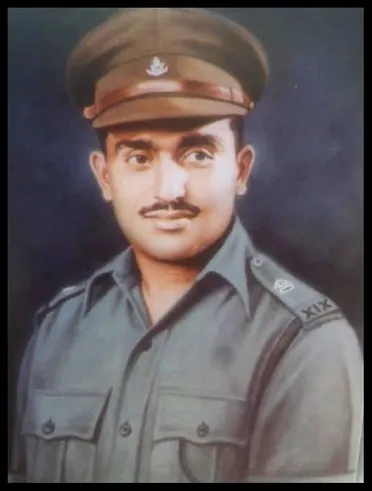

Param Vir Chakra
The Param Vir Chakra (PVC) is India's highest military decoration, awarded for displaying distinguished acts of valour during wartime. Param Vir Chakra translates as the "Wheel of the Ultimate Brave", and the award is granted for "most conspicuous bravery in the presence of the enemy". As of January 2018, the medal has been awarded 21 times, of which 14 were posthumous and 16 arose from actions in Indo-Pakistani conflicts. Of the 21 awardees, 20 have been from the Indian Army, and one has been from the Indian Air Force. Major Somnath Sharma, was the first recipient. A number of state governments of India as well as ministries of the central government provide allowances and rewards to recipients of the PVC (or their family members in case of the recipient's death). The history of present-day Indian gallantry awards can be traced back to the rule of the East India Company, when the first formal award was instituted by Lord William Bentinck in 1834 as the Order of Merit, later renamed the Indian Order of Merit in 1902. During the First World War, the British awards system was adopted and continued through the Second World War. Post-independence, new awards were instituted on 26 January 1950, with retroactive effect from 15 August 1947. The PVC is equivalent to the Victoria Cross in the United Kingdom and the Medal of Honor in the United States.
1-
Somnath Sharma
Major
Kumaon Regiment

2-
Jadunath Singh
Naik
Rajput Regiment

3-
Rama Raghoba Rane
Second Lieutenant
Bombay Sappers